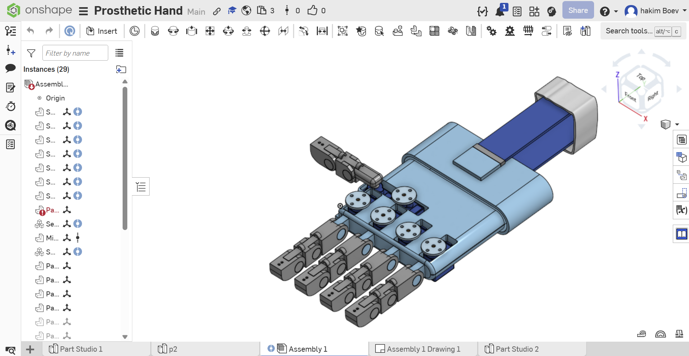
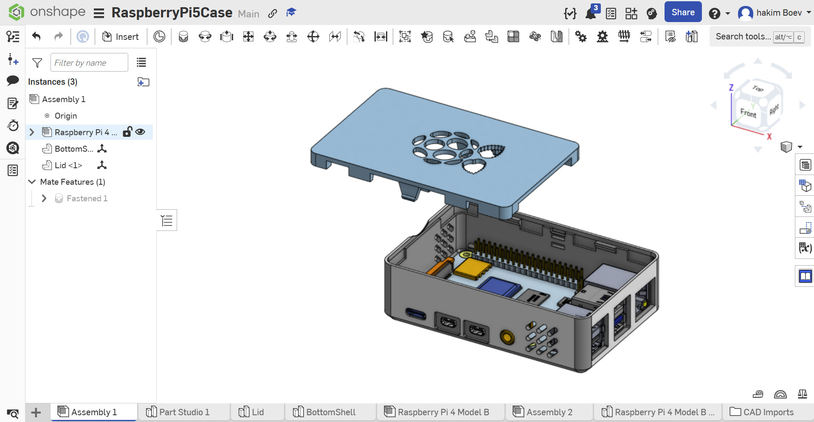
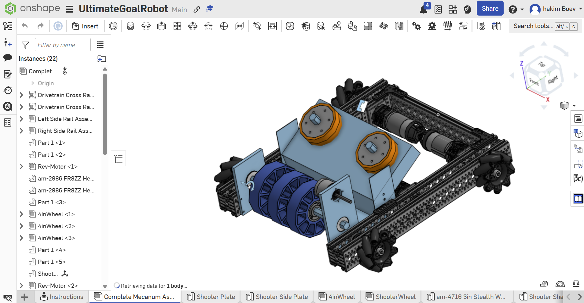

Engineering Designs & Software Implementations
Lead Programmer for "The Megalodons" (Team 333), building competition robot control systems in Java.
Role: Lead Programmer | Java, WPILib, AdvantageKit, CTRE Phoenix 6, PhotonVision
Lead programmer for Team 333's 2026 competition robot for the game "Rebuilt." Architected a
multi-mode control scheme using WPILib EventLoop swapping to cleanly separate
teleop-auto, teleop-manual, and test modes, and built a vision-aligned climb sequence that fuses
PathPlanner pathfinding with PhotonVision AprilTag pose correction for precision endgame scoring.
Diagnosed and resolved critical performance issues including a NetworkTables publisher cascade
that was causing 380+ loop overruns per match, and rewrote shooter targeting to use
MotionMagicVelocityTorqueCurrentFOC for battery-independent flywheel RPM control.
Role: Lead Programmer | Java, WPILib, AdvantageScope
Shipped the full control software stack, including a logging and simulation pipeline that enabled full match replay and autonomous routine debugging without physical hardware.
View Team Repository →Role: Programmer | Java, WPILib
Built the Java codebase for the 2024 season robot, integrating encoder and gyro feedback for closed-loop motor control.
View Team Repository →Mechanical design projects modeled in Onshape, focusing on rapid prototyping and assembly constraints.



Text-based interactive fiction engine built in Java, using inheritance and polymorphism to model rooms, items, and entity behavior as composable game objects.
View Code →GUI calculator that parses infix expressions and evaluates them with a stack-based shunting-yard implementation, correctly handling operator precedence and parentheses.
View Code →